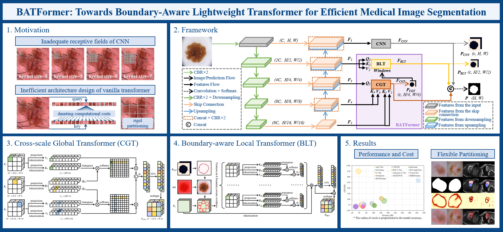

Xian LinPhD CandidateMedical Image Analysis via Machine Intelligence Group (MIAMI),Digital Media and Intelligent Network (DMIN), School of Electronic Information and Communications (EIC), Huazhong University of Science and Technology (HUST).
|
 |


Biography
I am currently a third-year Ph.D. student in the School of Electronic Information and Communications (EIC), Huazhong University of Science and Technology (HUST) under the supervision of Prof. Li Yu and Prof. Zengqiang Yan. I received my B.E. degree from the College of Physical Science and Technology, Central China Normal University.
My research interests lie in medical image analysis, efficient transformers, and medical foundation models.
News
2025. 06. One paper was accepted by MICCAI 2025. Congratulations to Qijie.
2024. 11. SAMCT has been accepted by IEEE Transactions on Medical Imaging.
2024. 10. I won the National Scholarship for Doctoral Students (2nd place in EIC, HUST).
2024. 06. One paper was accepted by MICCAI 2024 (top 31%) after rebuttal.
2024. 05. One paper was early accepted by MICCAI 2024 (top 11%).
2024. 04. One paper was accepted by Pattern Recognition (IF: 8.0). Congratulations to Xiayu.
2024. 03. Our new preprint “SAMCT: Segment Any CT Allowing Labor-Free Task-Indicator Prompts” is online on Arxiv.[paper] [code]
2023. 12. One paper was accepted by AAAI 2024. Congratulations to Zhehao.
2023. 09. Our new preprint “SAMUS: Adapting Segment Anything Model for Clinically-Friendly and Generalizable Ultrasound Image Segmentation” is online on Arxiv.[paper] [code]
2023. 06. One paper has been accepted by MICCAI 2023.
2023. 04. One paper has been accepted by IEEE Journal of Biomedical and Health Informatics (IF: 7.021).
2023. 02. One paper has been accepted by IEEE Transactions on Medical Imaging (IF: 11.037).
Selected Publications
| SAMCT: Segment Any CT Allowing Labor-Free Task-Indicator Prompts Xian Lin, Yangyang Xiang, Zhehao Wang, Kwang-Ting Cheng, Zengqiang Yan, Li Yu. IEEE Transactions on Medical Imaging (TMI), 2024. |
|

|
The Lighter The Better: Rethinking Transformers in Medical Image Segmentation Through Adaptive Pruning Xian Lin, Li Yu, Kwang-Ting Cheng, Zengqiang Yan. IEEE Transactions on Medical Imaging (TMI), 2023. |
|  | BATFormer: Towards Boundary-Aware Lightweight Transformer for Efficient Medical Image Segmentation Xian Lin, Li Yu, Kwang-Ting Cheng, Zengqiang Yan. IEEE Journal of Biomedical and Health Informatics (JBHI), 2023. |
| Beyond Adapting SAM: Towards End-to-End Ultrasound Image Segmentation via Auto Prompting Xian Lin, Yangyang Xiang, Li Yu, Zengqiang Yan. The 27th International Conference on Medical Image Computing and Computer Assisted Intervention (MICCAI), 2024. |
|
| Revisiting Self-Attention in Medical Transformers via Dependency Sparsification Xian Lin, Zhehao Wang, Zengqiang Yan, Li Yu. The 27th International Conference on Medical Image Computing and Computer Assisted Intervention (MICCAI), 2024. |
|
| ConvFormer: Plug-and-Play CNN-Style Transformers for Improving Medical Image Segmentation Xian Lin, Zengqiang Yan, Xianbo Deng, Chuansheng Zheng, Li Yu. The 26th International Conference on Medical Image Computing and Computer Assisted Intervention (MICCAI), 2023. |
|
Professional Services
International Conference on Medical Image Computing and Computer-Assisted Intervention (MICCAI), 2024&2025.
Chinese Conference on Pattern Recognition and Computer Vision (PRCV), 2023&2024.
IEEE Transactions on Medical Imaging (TMI)
IEEE Transactions on Image Processing (TIP)
Computers in Biology and Medicine (CIBM)
IEEE Transactions on Emerging Topics in Computational Intelligence (TETCI)
Selected Awards
National Scholarship (Highest Scholarship from the Ministry of Education of China), 2024.
MICCAI Outstanding Reviewer Award (Honorable Mentions), 2024.
MICCAI Registration Grant, 2024.
First Place in Student Exhibition Competition, Medical Imaging Computing Seminar (MICS), 2023.
National Scholarship (Highest Scholarship from the Ministry of Education of China), 2019.
Pacemaker to Merit Student (30 awardees in Central China Normal University), 2019.
© Xian Lin | Last updated: Jun. 2025